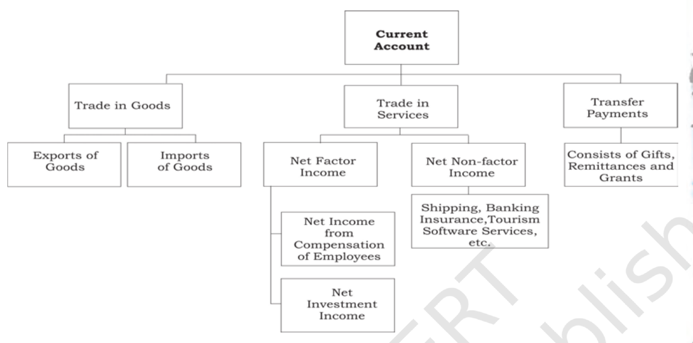
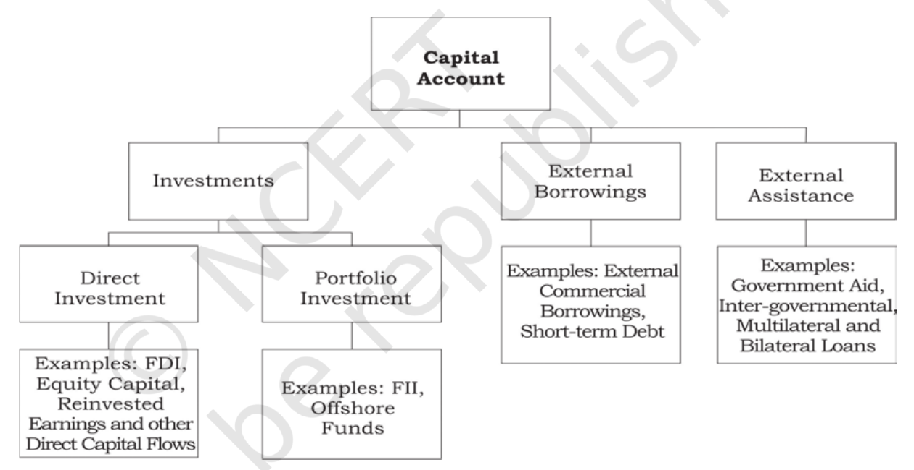
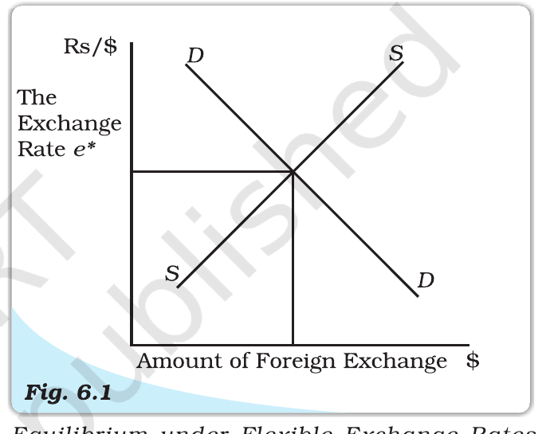
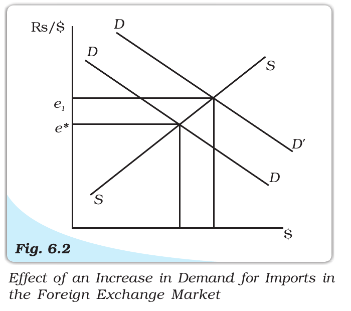
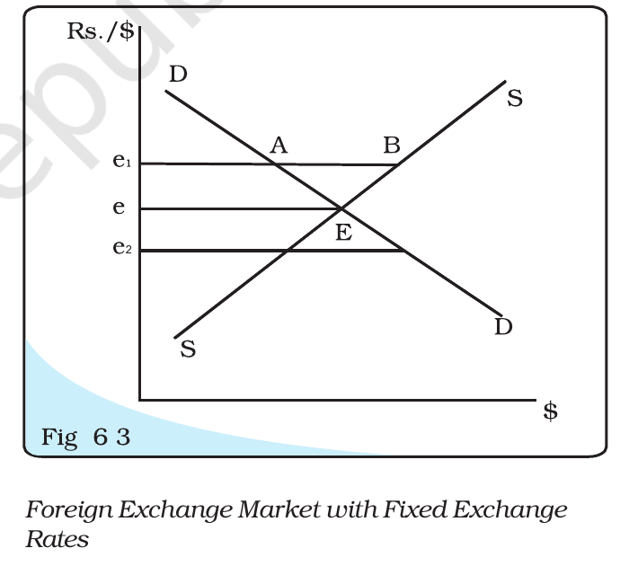

External Sector: BoP, Foreign Investment, Exchange Rates, CAD and IMF/World Bank
Class slides + handoutSlides 232-250, handout pages 1-47Handout quotes no PYQsPYQ sheets: 45 Prelims · 9 Mains · High
How the BoP is built from forex transactions, autonomous versus accommodative entries, FDI versus FPI and FDI reforms, exchange rate systems and convertibility, nominal, real and effective exchange rates, why a CAD arises and how it is cured, the J-curve and currency wars, and the Bretton Woods institutions: World Bank Group and the IMF with SDRs.
🧠 Understand it firstPicture a Delhi vendor who buys phone covers from China. The vendor has rupees; the Chinese seller wants yuan. Banks bridge the gap through the dollar, the universal go-between. Every such conversion is reported to the RBI with its purpose, and the RBI adds them all up. That total, kept in double-entry style where every entry has a matching opposite, is the balance of payments. It is a record of flows over a period; the stock of what the country owns and owes sits in the IIP.
✏ ExampleThe handout’s example: 10 lakh covers at 20 Yuan = 2 Crore Yuan, paid as about ₹20 Cr; SBI buys 20 lakh US dollars (assumed ₹100 per dollar) and the Chinese bank sells them at 10 yuan per dollar.
📐 Formulas of this section
Double entry
credits + debits = 0
every transaction has two entries of equal value
Mobile cover sum
10 lakh × 20 Yuan = 2 Crore Yuan
about ₹20 Cr via 20 lakh US dollars at ₹100 per dollar (handout)
The Balance of Payments (BoP) is the ledger of all economic transactions between residents and non-residents over a period (the handout calls it “the ultimate macroeconomic ledger of a nation”). Millions transact for selfish motives and do not report to the Commerce Ministry, but every one needs rupees converted into foreign currency or back, and that happens through Authorized Dealer (AD) banks who must report the value and purpose of every conversion to the RBI daily.
The handout’s mobile-cover example (₹20 Cr to China)
Step
What happens
Order
A Delhi vendor buys 10 lakh covers at 20 Yuan each = 2 Crore Yuan. The buyer has rupees; the seller needs yuan
Step 1: vehicle currency
The buyer pays SBI about ₹20 Cr. The direct INR-yuan market is not deep, so SBI buys 20 lakh US dollars (assumed ₹100 per dollar). The US dollar is the universal bridge (vehicle currency)
Step 2: global banking network
SBI’s dollar account is with Bank of America (New York). SBI messages: transfer $20 lakh to the Chinese bank’s (SBS) account at Wells Fargo. SBS sells the dollars in the Chinese forex market (assumed 10 yuan per dollar) and credits 2 Cr yuan to the seller
Step 3: Nostro, Vostro, Loro
Nostro (“ours”): SBI’s view of its account in New York. Vostro (“yours”): Bank of America’s view of the same account. Loro (“theirs”): a third bank (PNB) referring to SBI’s New York account
Step 4: the gatekeeper
RBI regulates forex under FEMA, 1999. Only licensed ADs convert. They ask for a purpose code and upload daily to RBI through FETERS (Foreign Exchange Transactions Electronic Reporting System). RBI aggregates this into the BoP
How a payment crosses the border
RBI compiles the BoP on IMF standards: the current standard is BPM6;BPM7 was released in 2025 and is expected to be adopted by 2029.
The BoP is a record of flows. The record of stocks is the International Investment Position (IIP), published along with it. Valuation changes appear in the IIP, not the BoP.
Double entry: every transaction has two entries of equal value, a credit (+) and a debit (−); all entries sum to zero. Credit = export of real resources or reduction of foreign assets / increase of foreign liabilities (money entering). Debit = imports, or increase of assets / decrease of liabilities (money leaving). One-sided items (gifts) get offsetting transfer entries.
Residents and non-residents are defined as in national accounts: by centre of economic interest, not nationality or legal criteria.
📘 From NCERT · NCERT Class XII Macroeconomics, Ch 6 (introduction, 6.1)
In plain words: Before the ledger, NCERT tells you why a country needs one at all: once an economy trades with the world, money must cross borders, and there is no world currency. That is why the handout’s mobile-cover story needs a dollar and a bank chain.
Link to the handout: Handout section 1: the payment chain and the BoP. NCERT’s three linkages and its BoP definition are the plain-words start.
Step 1 · What makes an economy “open”
Foreign trade affects aggregate demand in two ways. Buying foreign goods is a leakage from the circular flow (lowers AD). Exports to foreigners are an injection (raise AD).
Linkage
What it means
NCERT’s example
Output market
Trade in goods and services; wider choice between domestic and foreign goods
Indians consume products made around the world; some Indian products are exported
Financial market
Buying financial assets from other countries; choice between domestic and foreign assets
Labour market
Firms choose where to locate production, workers where to work; immigration laws restrict labour movement
NCERT then focuses on the first two
Step 2 · Why money needs a stable value across borders
At the international level there is no single currency issued by a single bank, and no authority that can force the use of one.
Foreign agents accept a national currency only if the goods it buys will not change often, that is, the currency keeps a stable purchasing power.
In the past governments tried to win confidence by promising free convertibility at a fixed price into another asset, most often gold or other national currencies. Credibility depended on two things: the ability to convert freely in unlimited amounts, and the price at which conversion takes place.
With more transactions, gold ceased to be the asset into which currencies could be converted.
Step 3 · Exchange rate and BoP, defined
An Indian who wants an American good priced at ten dollars needs dollars, and must know the price of a dollar in rupees. The price of one currency in terms of another is the foreign exchange rate.
The balance of payments (BoP) records the transactions in goods, services and assets between residents of a country and the rest of the world for a specified period, typically a year. It has two main accounts: current and capital.
NCERT differs: NCERT says “typically a year”; the handout says “a period” and shows quarterly charts. No conflict. (handout/teacher wins in class)
🧠 Understand it firstSplit the ledger in two. Above the line are choices made for self-interest: trade, tourism, investment, loans. Below the line are the leftovers: the RBI buying or selling dollars to absorb any gap, plus errors and omissions where the books do not quite match. So the “balance” in the balance of payments is struck by the central bank. If the autonomous items leave a surplus the RBI stores the dollars in reserves; if a deficit, it sells from reserves.
✏ ExampleThe handout’s numbers: CAD $10 B but capital surplus $25 B means net surplus $15 B, absorbed into reserves. Reserves $500 B, inflows $100 B and outflows $80 B means reserves should rise by $20 B to $520 B; observed $20.4 B gives E&O = +$0.4 B.
📐 Formulas of this section
The BoP idea
autonomous items + Δ reserves + E&O = 0
handout alert: remember the idea, old classification
Reserve sum
$500 B + $100 B − $80 B = $520 B
inflows $100 B, outflows $80 B on autonomous items
Handout figure Slide 2: Balance of Payments splits into the Current Account (Merchandise, Services, Earnings, Transfers) and the Financial/Capital Account (Loans and Borrowings, Investments). Reserves sit below, balancing the two. The side panel shows a current-account deficit of −50 bn against a capital and financial account surplus of +50 bn, netting to zero.
Autonomous versus accommodative transactions
Autonomous (“above the line”)
Accommodative (“below the line”)
Motive
Self-interest choices of residents and non-residents; nobody controls them
Not self-interested; necessitated by the net balance above
Items
Current account; capital and financial account
Change in reserves (Δ Reserves) and Errors and Omissions (E&O)
Who acts
Individuals and firms
The central bank (RBI)
A · The current account (settled transactions)
The current account tracks settled transactions that do not change assets or liabilities between residents and non-residents.
Current account components
Part
Contents
1.A.a Goods
Merchandise: textiles, electronics, intermediate goods, metals, coal, jewellery, non-monetary gold (not held as reserve)
1.A.b Services
Transport, travel, communication, financial, IT, insurance, royalties and licence fees
1.B Incomes
Compensation of employees; investment income (interest, dividends, profits): earned (+), paid (−)
1.C Current transfers
Remittances into India (+), transfers from India (−); no quid pro quo
Invisibles
Services + incomes + transfers
Memory aid · Current account: four parts
GIST
Get the GIST of the current account: goods, then the three invisibles.
GGoods: merchandise, including non-monetary goldIIncomes: pay of employees, interest, dividendsSServices: transport, travel, IT, insuranceTTransfers: remittances, no quid pro quo
Memory aid made from the handout's own list; the letters are rearranged, so the order is free.
B · The capital (and financial) account: old classification
2.A Debt: borrowings (+), lendings (−), including principal repayments. Classified by interest rate (concessional versus commercial), currency (domestic versus foreign) and place (onshore versus offshore). Governments borrow concessionally from agencies like the World Bank; private firms at commercial rates. Total commercial debt owed by residents to non-residents is ECB (External Commercial Borrowing).
Currency of denomination decides who bears exchange rate risk. The handout’s example: borrow in dollars when $1 = ₹90; if the dollar rises to ₹100, every ₹90 borrowed needs ₹100 to repay (before interest). Borrowing in rupees shifts the risk to the lender.
Masala bonds:offshore rupee-denominated bonds an Indian entity issues in (for example) American markets; the exchange rate risk shifts to the buyer; they help global recognition and the internationalisation of the rupee. An FII buying Indian government bonds is debt taken onshore in rupees.
2.B Investments: by Indians abroad (−), by foreigners in India (+); withdrawal by foreigners is (−). Split into FDI and FPI.
2.D Reserves: under BPM6 reserve assets sit in the financial account, but because FEMA works on a current/capital binary, RBI’s standard presentation shows the change in reserves in the capital account.
C · Accommodative transactions: reserves and E&O
If the net autonomous balance is a surplus (example: CAD $10 B but capital surplus $25 B = net surplus $15 B) RBI absorbs the excess foreign currency into reserves. In a net deficit RBI sells dollars from reserves. These are accommodating transactions.
Why RBI cannot sit out: if an importer’s bank cannot find dollars it goes to RBI; if an exporter’s bank cannot find a buyer it sells to RBI. Without RBI the dollar could crash or spike. In an open economy the central bank is less autonomous.
Mundell-Fleming trilemma (impossible trinity): a country cannot have all three of free capital flow, a fixed/managed exchange rate and independent monetary policy.
Worked example: reserves $500 B; inflows $100 B and outflows $80 B on autonomous items, so reserves should rise by $20 B to $520 B. That is the “balance” in the BoP.
Errors and Omissions: if the observed reserve change is $20.4 B against an expected $20 B, E&O = +$0.4 B balances it. Causes: timing mismatches, exchange rate moves in transit, unrecorded illegal capital flight.
Handout figure Slide 13: “India’s BoP: Overall” (RBI figures 16 and 17). Teacher’s marks: pink ovals and a star around 2020-21 Q1 and Q2 on Figure 16 (CAB as % of GDP is positive) and on Figure 17a (BoP balance, where the current account bars are above zero). Figure 17b shows augmented forex reserves rising to about US$634 billion by 2021-22 Q3.
📘 From NCERT · NCERT Class XII Macroeconomics, §6.1.1 Current Account, Fig. 6.1
In plain words: NCERT draws the current account as a tree and then gives a neat vocabulary: balance of trade (goods only) and balance on invisibles (everything else). Read the figure first.
Link to the handout: Handout section 2, current account table (goods, services, incomes, transfers, invisibles). NCERT groups the items differently, see the red box.
Step 1 · The tree

NCERT Fig. 6.1, original: Components of Current Account. Three branches: Trade in Goods (exports, imports), Trade in Services (net factor income: compensation of employees, investment income; net non-factor income: shipping, banking, insurance, tourism, software) and Transfer Payments (gifts, remittances, grants). How to read: left to right, goods, services, free transfers.
Step 2 · Three words and how they relate
Factor income = net international earnings on factors of production (labour, land, capital). Non-factor income = net sale of service products like shipping, banking, tourism, software services.
Term
NCERT’s meaning
Balance of Trade (BOT) = trade balance
Value of exports minus value of imports of goods. Exports are a credit, imports a debit
Net invisibles
Exports minus imports of invisibles: services, transfers and flows of income
Current account balance
Trade balance plus net invisibles
Transfer payments
Receipts for “free”, with no goods or services in return: gifts, remittances, grants; by government or private citizens living abroad
Step 3 · Surplus, balance, deficit
NCERT’s reading: surplus means the nation is a lender to other countries; deficit means it is a borrower.
Trade surplus: exports of goods exceed imports; trade deficit: imports exceed exports. Imports are expenditure from our country and income of the foreign country, so imports lower domestic demand; exports raise it.
Current account balance
trade balance + net invisibles
NCERT Table 6.1: −90 + 52 = −38
Net invisibles
non-factor services + income + transfers
30 − 10 + 32 = 52
Current account surplus
Balanced
Current account deficit
Receipts > Payments
Receipts = Payments
Receipts < Payments
NCERT differs: NCERT puts net factor income (compensation of employees, investment income) under “Trade in Services”. The handout keeps services (1.A.b) and incomes (1.B) as separate parts of invisibles. Use the handout. (handout/teacher wins in class)
NCERT differs: NCERT’s tree names transfers as gifts, remittances and grants; the handout says current transfers have no quid pro quo. Same idea. (handout/teacher wins in class)
📘 From NCERT · NCERT Class XII Macroeconomics, §6.1.2 Capital Account, Fig. 6.2
In plain words: The capital account is the record of who bought or sold assets. NCERT’s tree shows the old four-way split that RBI and the Economic Survey still use.
Link to the handout: Handout section 2 (B): old classification: debt, investments, others, reserves. Compare with NCERT’s tree.
Step 1 · The tree

NCERT Fig. 6.2, original: Components of Capital Account. Investments (Direct: FDI, equity capital, reinvested earnings and other direct capital flows; Portfolio: FII, offshore funds), External Borrowings (ECB, short-term debt), External Assistance (government aid, inter-governmental, multilateral and bilateral loans). How to read: top to bottom.
Step 2 · Debit or credit? NCERT’s two examples
An asset is any form in which wealth can be held: money, stocks, bonds, government debt. Purchase of assets is a debit item.
Balance: inflows (loans received, sale of assets or shares) equal outflows (repayment of loans, purchase of assets or shares abroad) = balanced. More inflow = surplus; less = deficit.
Case
Entry
Why
An Indian buys a UK car company
Debit on the capital account
Foreign exchange flows out of India
Share of an Indian company sold to a Chinese customer
Credit on the capital account
Foreign exchange flows in
Step 3 · New (BPM6) classification, NCERT Box 6.1
Under the IMF’s sixth manual (BPM6) transactions are in three accounts: current, financial and capital.
Biggest change: almost all trade in financial assets such as bonds and equity shares moved to the financial account. NCERT notes RBI still publishes the old two-account system too.
NCERT differs: NCERT lists “external assistance” as its own group and has no “reserves” inside the capital account; the handout’s old classification lists debt, investments, others and reserves. Learn the handout list; recognise NCERT’s tree. (handout/teacher wins in class)
NCERT differs: NCERT still says FII; the handout says FIIs were merged into FPIs in 2014. (handout/teacher wins in class)
📘 From NCERT · NCERT Class XII Macroeconomics, §6.1.3 BoP surplus and deficit, autonomous and accommodating items
In plain words: This is the heart of the handout’s “above the line, below the line” idea. NCERT adds the neat saying: a country, like a person, must finance overspending by selling assets or borrowing.
Link to the handout: Handout section 2 (autonomous versus accommodative; reserves; E&O). NCERT’s identity omits reserves and E&O when it says the BoP is in equilibrium.
Step 1 · Financing a deficit
A person who spends more than income must sell assets or borrow. A country with a current account deficit must finance it by selling assets or borrowing abroad.
So any current account deficit must be financed by a capital account surplus, a net capital inflow.
NCERT’s identity
current account + capital account ≡ 0
BoP equilibrium: deficit financed entirely by international lending, with no reserve movements
Step 2 · Or use the reserves
The reserve bank can sell foreign exchange when there is a deficit: official reserve sale. The decrease (increase) in official reserves is the overall BoP deficit (surplus).
The monetary authorities are the ultimate financiers of any deficit (or recipients of any surplus). Official reserve transactions matter more under fixed than under floating exchange rates.
BoP deficit
Balanced BoP
BoP surplus
Overall balance < 0
Overall balance = 0
Overall balance > 0
Step 3 · Autonomous versus accommodating, in NCERT’s words
Autonomous (“above the line”)
Accommodating (“below the line”)
Why made
For some reason other than bridging the BoP gap; independent of the state of BoP; one reason could be profit
Determined by the gap in the BoP, that is, by the net result of the autonomous items
BoP surplus or deficit means
Autonomous receipts greater (less) than autonomous payments = surplus (deficit)
Official reserve transactions bridge the gap, so they are the accommodating item
Step 4 · Errors and omissions
It is difficult to record all international transactions accurately, so there is a third element of the BoP apart from the two accounts: errors and omissions.
NCERT differs: NCERT calls only official reserve transactions “accommodating” and treats errors and omissions as a separate third element. The handout groups both Δ reserves and E&O below the line. Handout wins in class. (handout/teacher wins in class)
NCERT differs: NCERT’s small table pairs “BoP deficit: overall balance < 0” with “reserve change > 0” while its text says a decrease in official reserves is a deficit. Its sign for “reserve change” is the opposite of the text: read the text, not the table row. (handout/teacher wins in class)
⭐ RememberAutonomous (above) + Δ reserves and E&O (below) = 0. Old classification: reserves in capital account. Impossible trinity.
3 · Slide data on India’s BoP (Economic Survey charts)#
🧠 Understand it firstThis section is a data tour with no new ideas: the slides show charts and tables of India’s BoP from 2019-20 to 2021-22. Read them with the structure of section 2 in mind: trade balance, invisibles, capital account, FDI, FPI, reserves. The only mark the teacher made is the pink oval and star on 2020-21 Q1 and Q2, when the current account was in surplus.
✏ ExampleThe handout gives India’s top 5 trading partners: USA 11.3%, China 10.9%, UAE 7.3%, Saudi Arabia 4.1%, Hong Kong 3.7%.
The slide deck then shows RBI/Economic Survey charts for 2019-20 to 2021-22. They are charts, not text, so only the headline readings that the slides state are listed:
Slide 3 (Table 6): major components of India’s BoP, 2019-20 to 2021-22, US$ billion (current account, merchandise trade balance, invisibles, capital account, FDI, FPI, loans, banking capital, errors and omissions, overall balance, forex reserves change).
Slides 7-9 (trade balance): growth in exports and imports; the top 10 export commodities pie; the top 10 import sources and export destinations. Slide 19 gives India’s top 5 trading partners (share of foreign trade): USA 11.3%, China 10.9%, UAE 7.3%, Saudi Arabia 4.1%, Hong Kong 3.7%.
Slide 10 (invisibles): services exports and imports; remittances; composition of net invisibles (services, transfers, income).
Slides 11-12: current account balance and its composition; FDI and FPI trends (FPI remained volatile); capital account composition.
Slide 18: sources of forex reserves (FCA, gold, RTP, SDR) and import cover (months).
Handout figure Slide 19 (PIB graphic): India’s top 5 trading partners by share of foreign trade, and the top 5 imports (crude petroleum, gold, petroleum products, coal, coke and briquettes) and top 5 exports (petroleum products, precious stones, drug formulations and biologicals, gold and precious metals, iron and steel).
Handout figure Slide 18: Figure 19 from the RBI: sources of foreign exchange reserves (FCA, gold, RTP, SDR) and import cover (right axis, months), 2018-19 to 2020-21.
📘 From NCERT · NCERT Class XII Macroeconomics, Table 6.1 (sample BoP for India); Class XII Ch 2 Table 2.6
In plain words: The handout shows real charts. NCERT gives a small sample BoP in million US dollars so you can practise the arithmetic once with simple numbers. Fill it in line by line.
Link to the handout: Handout section 3 (Table 6 of the slides: components of India’s BoP). Same rows, tiny numbers.
Step 1 · The table, line by line (million USD, as printed)
No.
Item
Million USD
1
Exports (of goods only)
150
2
Imports (of goods only)
240
3
Trade balance
−90
4
(Net) invisibles = 4a + 4b + 4c
52
4a
Non-factor services
30
4b
Income
−10
4c
Transfers
32
5
Current account balance = 3 + 4
−38
6
Capital account balance = 6a + … + 6f
41.15
6a
External assistance (net)
0.15
6b
External commercial borrowings (net)
2
6c
Short-term debt
10
6d
Banking capital (net), of which non-resident deposits (net) 9
15
6e
Foreign investments (net) = FDI 13 + portfolio 6
19
6f
Other flows (net)
−5
7
Errors and omissions
3.15 (as printed)
8
Overall balance = 5 + 6 + 7
0
9
Reserves change
0
Step 2 · What the table says
There is a trade deficit and a current account deficit, but a capital account surplus. NCERT: “As a result, BOP is in balance.”
Check by arithmetic (worked out here): 0.15 + 2 + 10 + 15 + 19 − 5 = 41.15, and −90 + 52 = −38, so the capital account (41.15) finances the deficit (−38) with 3.15 to spare.
Step 3 · One more NCERT data point: exports and imports of goods and services
NCERT Table 2.6 (2024-25, ₹ crore, constant 2011-12 prices) lists exports of goods and services 4068098 and imports 4229390.
Imports exceed exports, so net exports are negative (worked out here: 4068098 − 4229390 = −161292); NCERT prints net exports as 161292 without the minus sign.
NCERT differs: Printing slips in NCERT Table 6.1: (a) the trade balance is labelled “[2 − 1]” but is computed exports minus imports (150 − 240 = −90), so it should read [1 − 2]; (b) errors and omissions is printed as +3.15, but for the overall balance to be 0, the arithmetic needs −3.15 (worked out here: −38 + 41.15 + 3.15 = 6.30, not 0). Take the idea (E&O is the balancing item), not the sign. (handout/teacher wins in class)
NCERT differs: NCERT’s own text numbers two figures “Fig. 6.1” and two “Fig. 6.2” (BoP trees and exchange-rate graphs). Keep the topic in mind, not the number. (handout/teacher wins in class)
⭐ RememberTeacher’s star = 2020-21 Q1 and Q2 current-account surplus. FPI stayed volatile.
4 · Foreign investment: from poverty of capital to the control test#
🧠 Understand it firstForeign money comes in two temperaments. FDI is a marriage: the investor wants a say, builds the factory and stays through bad times. FPI is a date: money that buys shares and bonds, leaves when profits are made or losses start, and can shake the exchange rate. India stopped judging by intent and now uses an objective test: 10% or more of the equity means control, so FDI. Unlisted companies are always FDI. Almost every sector is open except nine prohibited ones, and over 90% of FDI comes by the automatic route.
✏ ExampleThe handout’s cases: 5% equity plus 20% of debt = FPI; an FPI crossing 10% in a listed firm is reclassified as FDI; Budget 2021 raised insurance FDI to 74% from 49%; Kia (greenfield) versus Walmart acquiring Flipkart (brownfield).
📐 Formulas of this section
FDI test
equity ≥ 10% = FDI; equity < 10% = FPI
unlisted company: always FDI
The history (handout)
1950s-80s: absolute poverty; near-zero domestic savings made domestic investment impossible; food dependence on the US PL-480; the 1962 war, and Shastri’s 1965 “Jai Jawan, Jai Kisan” call to skip a meal. Foreign capital was needed but offered on draconian terms: partner with an Indian firm, source 60% locally, no repatriation of profits. The LPQ (License, Permit, Quota) Raj made allocation depend on connections. Suzuki’s entry for Maruti in the 1980s needed political manoeuvring.
1991: the BoP crisis (threat of sovereign default, IMF pressure) led to the LPG reforms. The mindset shift stayed slow: as late as 2012 the government demanded 30% local sourcing from Apple, and Apple walked away.
Reforms listed: 1991 opening, 2000 FDI liberalisation, 2013 new policy, 2016 liberalisation, 2020 foreign investment conditions; the handout ties them to post-nuclear-test isolation, the 2013 US Fed tapering, demonetisation’s bad press, and the 2020 supply-chain shock.
FDI versus FPI (slide 4 and handout)
FDI (Foreign Direct Investment)
FPI (Foreign Portfolio Investment, formerly FII)
Control
Intention to exercise control: 10% or more equity
No intention to exercise significant control: less than 10%
Nature
Long term, stays through downturns; brings money and technology
“Hot money”: cashes out when targets are met or losses mount; money only
Exchange rate
Stable
Large inflow or outflow may cause sharp appreciation or depreciation
Regulation
Sectoral limits (mostly liberalised); multiple approvals (sectoral regulator, Home, Defence, Environment); earlier FIPB and CCEA; now mostly automatic
Instrumental limits (mostly liberalised); regulators RBI and SEBI; less cumbersome
Example
Honda building cars; Budget 2021: insurance FDI limit 74% from 49%
FIIs buying Indian stocks and government bonds
Why the old test failed: earlier the split was by perceived intent (the old term was FII), which was subjective: some “FDI” investors left like hot money and some “FII” funds stayed for decades. In 2013-14, on the Arvind Mayaram Committee, India adopted an objective “significant control” test (IMF/OECD).
FDI or FPI: the control test
The 10% rule (handout)
Case
Classification
Foreign owner holds 10% or more of equity in a listed Indian company
FDI
Foreign owner holds less than 10% of a listed company
FPI
Any foreign investment in an unlisted private company or startup
Treated as equity today: the 10% is on “post-issue paid-up equity capital on a fully diluted basis”
An FPI like BlackRock crosses 10% in a listed company
That investment is reclassified as FDI; BlackRock itself stays registered as an FPI
The term FII now only describes a class of investors (large funds like BlackRock, Vanguard, KKR). In 2014 SEBI legally erased the term: FIIs, sub-accounts and Qualified Foreign Investors merged into Foreign Portfolio Investors (FPIs).
FDI is subject to sectoral regulation (Defence, Insurance, Telecom limits), apart from SEBI and RBI financial-market rules.
FDI reforms and the present regime
Almost every sector open to the Indian private sector is open to foreigners except 9 prohibited sectors: 1 lottery, 2 gambling and betting (including casinos), 3 chit funds, 4 Nidhi companies, 5 trading in Transferable Development Rights (TDRs), 6 real estate business (pure buying and selling of land for profit), 7 manufacture of tobacco products, 8 atomic energy, 9 railway operations (except certain infrastructure).
Limits go up to 100% in several sectors. Budget 2021: insurance FDI raised to 74% from 49%.
Automatic route:over 90% of FDI comes this way. No prior approval; inform RBI within 30 days of bringing the money. A foreigner faces the same regulations as an Indian.
Government (approval) route: sensitive sectors need the Ministry’s prior approval through the Foreign Investment Facilitation Portal (FIFP). Any foreign investment above ₹5,000 Crore needs CCEA approval. The FIPB has been abolished.
Defence example: up to 74% in a joint venture is automatic (the JV applies to the Ministry of Defence); 100% needs CCEA approval, given on bringing state-of-the-art technology.Print media: FDI capped at 26% (the Ministry of Information and Broadcasting steps in at the control line).
Greenfield = investment in a new entity (e.g. Kia building a new factory in Andhra Pradesh). Brownfield = investment in an existing entity (e.g. Walmart acquiring Flipkart).
FPI is money; FDI is marriage: the entity is regulated, not the investor. Fit and proper: when a Japanese bank like Mitsui wanted a 20% stake in an Indian bank, it crossed the 10% line and RBI would test its track record, ultimate beneficial owners and financial stability. A 6% FPI holding (the handout’s Vanguard in Yes Bank example) barely registers.
📘 From NCERT · NCERT Class XI Indian Economic Development, Ch 2 (§2.5 Trade policy: import substitution)
In plain words: The handout’s history says foreign capital was needed but treated roughly, and the LPQ Raj made life hard. NCERT explains the trade policy of that time: protect domestic industry behind tariffs and quotas.
Link to the handout: Handout section 4 history (1950s-80s, LPQ Raj, 60% local sourcing). NCERT’s import substitution is the trade side of the same inward-looking strategy.
Step 1 · What import substitution meant
In the first seven plans trade followed an inward-looking strategy called import substitution: replacing imports with domestic production (e.g. making vehicles in India instead of importing them).
Protection from imports took two forms. Tariffs are a tax on imported goods, making them more expensive. Quotas specify the quantity that can be imported. Both restrict imports and protect domestic firms.
Step 2 · NCERT’s reasons
Developing-country industries were thought unable to compete with goods of more developed economies; protected, they would learn to compete in time.
Planners also feared foreign exchange being spent on imported luxury goods if imports were not restricted.
No serious thought was given to promoting exports until the mid-1980s.
📘 From NCERT · NCERT Class XI Ch 3 (§3.2 Background of the 1991 crisis; §3.6 assessment); Glossary
In plain words: The handout says “1991: the BoP crisis led to the LPG reforms”. NCERT tells the crisis in plain steps and gives the foreign investment and reserves figures after the reforms.
Link to the handout: Handout section 4 (history, 1991, reforms list) and section 11 (IMF conditionalities).
Step 1 · How the crisis built up (NCERT’s order)
NCERT defines the crisis as one “relating to its external debt”: the government could not repay borrowings from abroad.
Step
What happened
1
In the late 1980s government expenditure began to exceed revenue by such large margins that borrowing became unsustainable
2
Prices of many essential goods rose sharply; imports grew at a very high rate without matching growth of exports
3
Foreign exchange reserves, partly borrowed, fell to a level not adequate to finance imports for more than two weeks
4
There was not enough foreign exchange to pay interest to international lenders; no country or international funder was willing to lend to India
5
India approached the IBRD (World Bank) and the IMF and received $7 billion as loan; in return it was expected to liberalise and open up the economy
Step 2 · After the reforms: NCERT’s figures
Item
1990-91
Later year
Foreign investment (FDI plus FII)
about US $100 million
US $ 23 billion in 2022-23
Foreign exchange reserves
about US $ 6 billion
about US $ 646 billion in 2023-24
Step 3 · Foreign investment words in the NCERT glossary
Foreign Direct Investment: investment of foreign assets into domestic structures, equipment and organisations; “does not include foreign investment into the stock markets”. FDI is durable; equity investments are potentially “hot money”.
Foreign Institutional Investment: foreign investments in stocks, bonds or other financial assets that do not entail active management or control over the firms.
Trade and investment reforms aimed to raise international competitiveness and bring in foreign investment and technology.
NCERT differs: NCERT’s glossary says FDI “does not include foreign investment into the stock markets”. The handout’s 10% test counts an investor holding 10% or more of a listed company as FDI. Use the handout test. (handout/teacher wins in class)
NCERT differs: NCERT keeps the term FII; the handout says FII was merged into FPI in 2014. Handout wins. (handout/teacher wins in class)
⭐ Remember10% or more = FDI = marriage. Below 10% = FPI = hot money. 9 prohibited sectors; automatic route 90%+; CCEA above ₹5,000 Cr.
🧠 Understand it firstThe exchange rate is simply the price of a dollar in rupees, set where those who want dollars meet those who bring dollars. Importers, tourists, students and FPIs selling stocks want dollars. Exporters, investors, borrowers and remitters bring them. An oil price jump means more demand for dollars and a costlier dollar. Countries then choose a system: let the market decide (floating), fix it by decree (fixed), tie it to a big neighbour’s currency (pegged), or float with the central bank smoothing wild swings (managed float, India).
✏ ExampleThe handout: $1 = ₹90 direct, ₹1 = $(1/90) ≈ $0.011 indirect. A cheap fixed dollar at ₹40 against a market ₹90 would explode demand and breed black markets (Hawala). Bhutan’s ngultrum is pegged 1:1 to the rupee.
📐 Formulas of this section
Direct quote
$1 = ₹90
price of foreign currency in domestic units
Indirect quote
₹1 = $(1 ÷ 90) ≈ $0.011
price of domestic currency in foreign units
An exchange rate (ER) is the price of one currency in terms of another. Neither the US Fed nor the RBI dictates it in India; millions of buyers and sellers do.
Direct quote: $1 = ₹90 (price of foreign currency in domestic units). Indirect quote: ₹1 = $(1/90) ≈ $0.011.
Demand for dollars (a minus on the autonomous BoP): importers; income outflows (interest and dividends abroad); capital flight (FPIs selling stocks); citizens abroad (tourists, students).
Supply of dollars (a plus on the autonomous BoP): exporters; foreign investors (FDI, FPI); borrowings (ECBs); remittances and tourism.
The ER is where D$ meets S$. A crude oil price surge raises demand for dollars and the dollar becomes costlier (₹90 to ₹95); a flood of foreign investment raises supply and the dollar becomes cheaper.
Exchange rate systems
The four systems (handout; slide 5 for the first three)
System
What it is
Terms and examples
Floating (market based)
The ER is set by demand and supply; no intervention; free movement of foreign currency; needs a deep forex market
Appreciation / depreciation (automatic)
Fixed
An authority sets a rigid rate and enforces it. A cheap fixed dollar (₹40 against a market ₹90) would explode demand, so the central bank must sell reserves (finite) or restrict demand (import bans, limits on profit repatriation and remittances). This breeds illegal channels and black markets (Hawala) and shields inefficient domestic producers
Devaluation / revaluation. Slide 5: ways to fix: control demand or supply of foreign currency; peg to a stable commodity (gold standard pre-World War); peg to another currency through currency boards
Pegged (a variant of fixed)
A country without a deep forex market pegs to a large trading partner’s or neighbour’s currency
Bhutan’s ngultrum and Nepal’s rupee pegged to the INR (Bhutan 1:1); UAE dirham and Hong Kong dollar pegged to the US dollar
Managed float (dirty float, mixed)
Largely floating, but the central bank intervenes on certain objectives (e.g. volatility)
India follows a managed float. RBI does not target a specific value (₹82 or ₹85); its sole aim is to curb excessive volatility by selling or buying dollars. The handout objects to the term “dirty float” as pejorative
Evolution of India’s exchange rate system (handout)
VERS (Voluntary Exchange Rate System) / managed float; rupee fully convertible on the current account
Convertibility of the rupee
Convertibility is the legal ease of swapping domestic and foreign currency. Non/partially convertible (restrictions on amount or purpose) is a hallmark of fixed regimes; fully convertible needs no RBI permission.
Before 1993 the rupee was rigidly fixed and restricted. Today it is 100% convertible on the current account. On the capital account it is partially convertible: FDI and FPI are free, but there are limits on corporate ECBs and on resident Indians sending capital abroad (LRS limits). So the rupee is “partly convertible (or almost fully convertible)”.
Tarapore Committees (1997 and 2006) on full capital account convertibility concluded it is too dangerous until India fixes its fiscal deficit and bank NPAs.Slide 6: the Tarapore recommendation is a graded move towards full convertibility: control of fiscal deficit, control over inflation, shoring up the government’s ability to repay debts, controlling gross NPAs of banks. The 2nd Tarapore Committee further recommended: raising ECB limits, relaxations for NRIs,abolition of Participatory Notes.
Memory aid · Tarapore: conditions before full convertibility
FIND
Before opening the capital account, FIND these four things under control.
FFiscal deficit brought under controlIInflation brought under controlNNPAs: gross NPAs of banks controlledDDebt: government's ability to repay is shored up
Memory aid made from the handout's own list; the letters are rearranged, so the order is free.
External debt (slide 8)
External debt includes: sovereign debt, ECBs, FII debt, multilateral debt, Masala bonds, and (proposed) sovereign debt bonds.
Most foreign debt is denominated in US dollars, followed by INR-denominated debt; most is of long-term maturity (the slide points to an article for detail).
📘 From NCERT · NCERT Class XII Macroeconomics, §6.2 Foreign exchange market; §6.2.1 Demand and supply of foreign exchange; Fig. 6.1 and 6.2 (flexible rate)
In plain words: NCERT builds the exchange rate the same way as any price: who demands dollars, who supplies them, and where the curves meet. The two original graphs below are the picture of the handout’s “D$ meets S$”.
Link to the handout: Handout section 5: demand for dollars (importers, income outflows, capital flight, citizens abroad) and supply (exporters, investors, borrowings, remittances).
Step 1 · Demand and supply of foreign exchange (NCERT)
Foreign exchange market participants: commercial banks, foreign exchange brokers, other authorised dealers and monetary authorities. The market is world-wide.
A rise in the price of foreign exchange makes imports costlier in rupees, so demand for imports and for foreign exchange falls. It makes Indian goods cheaper for foreigners, so exports may rise (whether supply actually rises depends on elasticities).
Demand for foreign exchange because…
Supply of foreign exchange because…
People want to buy goods and services from other countries
Exports lead foreigners to buy our goods and services
They want to send gifts abroad
Foreigners send gifts or make transfers
They want to buy financial assets of a country
Foreigners buy the assets of the home country
Step 2 · The flexible (floating) rate: where D meets S
In a completely flexible system central banks do not intervene.

NCERT Fig. 6.1 (exchange-rate graph), original: Equilibrium under flexible exchange rates. Vertical axis Rs/$, horizontal axis amount of foreign exchange ($). The falling D and rising S cross at e*. How to read: that crossing is the market exchange rate.
Step 3 · Shift in demand: depreciation and appreciation
Word
Meaning (floating system)
NCERT example
Depreciation of the rupee
The price of foreign currency in rupees rises; the rupee is worth less
e0 = 50 becomes e1 = 70: Rs 70 needed for a dollar instead of Rs 50
Appreciation of the rupee
The price of the rupee in dollars rises; fewer rupees are needed for a dollar
The reverse movement

NCERT Fig. 6.2 (exchange-rate graph), original: Effect of an increase in demand for imports. The demand curve shifts right (D to D′) and the rate moves from e* up to e1. How to read: more demand for dollars, dearer dollar.
NCERT differs: NCERT’s floating-rate figures are numbered Fig. 6.1 and Fig. 6.2, the same numbers as its BoP trees (a numbering slip in the book). (handout/teacher wins in class)
📘 From NCERT · NCERT Class XII Macroeconomics, §6.2.2 Fixed rates, devaluation; §6.2.3 Merits and demerits; §6.2.4 Managed floating; Fig. 6.3
In plain words: The handout gives the four systems. NCERT shows how a fixed rate is defended with a graph and why fixed rates collapse: reserves run out and speculators attack.
Link to the handout: Handout section 5 table: floating, fixed, pegged, managed float; also the “fixed rate needs reserves or restrictions” point.
Step 1 · A fixed rate, defended by the central bank
Example: the Government wants to encourage exports and fixes Rs 70 per dollar against a market rate of Rs 50. The new rate e1 is above e.
At e1 supply of dollars exceeds demand (AB). The RBI buys the dollars for rupees and so keeps accumulating foreign exchange as long as it intervenes.
If the Government fixes the rate at e2 there is excess demand for dollars; it must withdraw dollars from past holdings. If it fails, a black market for dollars may come up.

NCERT Fig. 6.3, original: Foreign exchange market with fixed exchange rates. The market rate is e; e1 is above and e2 is below it. At e1 supply of dollars exceeds demand by the stretch AB; at e2 demand exceeds supply. How to read: the gap between the curves at a fixed rate is what the central bank must fill.
Step 2 · Two words
Glossary: devaluation = the decrease in the price of domestic currency under pegged rates through official action; depreciation = the same fall under floating rates.
Word
NCERT’s meaning (fixed system)
Devaluation
Government action raises the exchange rate (rupees per dollar), making the domestic currency cheaper
Revaluation
Government decreases the exchange rate, making the domestic currency costlier
Step 3 · Merits and demerits, side by side
NCERT: fixed rates are prone to speculative attacks, as seen before the collapse of the Bretton Woods system.
Fixed rate
Flexible rate
Main feature
Needs credibility that the government can maintain the rate; deficits are met from official reserves
Exchange-rate movements automatically take care of BoP surpluses and deficits
Reserves
If people think reserves are inadequate they doubt the rate: speculation of devaluation, a speculative attack on a currency
No need to hold large stocks of foreign exchange reserves
Monetary policy
Must intervene to maintain the rate
Countries gain independence in conducting monetary policy
Step 4 · Managed floating
Without any formal international agreement the world has moved to a mix: the float part of a flexible system and the managed part of a fixed system.
Central banks intervene to buy and sell foreign currencies to moderate movements whenever they feel it appropriate. Official reserve transactions are therefore not equal to zero.
NCERT also calls this “dirty floating”.
NCERT differs: NCERT uses the term “dirty floating”; the handout objects to it as pejorative. Use “managed float” in answers. (handout/teacher wins in class)
NCERT differs: NCERT’s Fig. 6.3 reads “Fig 6 3” in print (missing full stop). (handout/teacher wins in class)
📘 From NCERT · NCERT Class XII Macroeconomics, §6.2.2 Speculation; Interest rates; Income; Class XI Ch 3 (foreign exchange reforms)
In plain words: The handout says demand and supply decide the rate. NCERT lists the forces behind the shifts: expectations, interest rate gaps and national income. Each has a tiny story.
Link to the handout: Handout section 5: oil price surge raises demand for dollars; foreign investment flood raises supply. NCERT adds three more drivers.
Four drivers of shifts in demand or supply of dollars
Driver
The mechanism
NCERT’s example
Speculation
People hold foreign money if they expect it to gain value; this raises demand now and makes the belief self-fulfilling
Rs 80 to a pound; expected Rs 85 at month end: Rs 80,000 buys 1000 pounds, to be sold for Rs 85,000: profit Rs 5,000
Interest rate gap
Funds move to where interest is highest. Country A bonds pay 8 per cent, country B 10 per cent: A’s currency depreciates, B’s appreciates
A rise in interest rates at home often leads to an appreciation of the domestic currency (if no restrictions on buying foreign bonds)
Income at home
Higher income raises imports, so the demand curve for foreign exchange shifts right: depreciation
A country whose aggregate demand grows faster than the world’s normally finds its currency depreciating
Income abroad
Higher foreign income raises our exports, so supply of foreign exchange shifts out
On balance the currency may or may not depreciate: depends on whether exports grow faster than imports
What happened to India in 1991 (NCERT)
In 1991, as an immediate measure to resolve the BoP crisis, the rupee was devalued against foreign currencies. This led to an increase in the inflow of foreign exchange.
It also set the tone to free the determination of the rupee’s value from government control: now more often than not markets determine exchange rates based on demand and supply.
⭐ RememberD$ meets S$. Direct quote = rupees per dollar. India: Par value 1947-1971 → pound 1971-1975 → basket 1975-1992 → LERMS → VERS 1993. Current account convertible; capital account partial.
🧠 Understand it firstIt is the movement of the rate, not its level, that decides who wins trade. The nominal rate is what you see on the screen. The real rate corrects it for inflation: if your prices rise faster than your partner’s, your goods get dearer even with a fixed nominal rate. The effective rate averages the rupee against a whole basket of trading partners. Beware the trap: the dollar falling from ₹90 to ₹80 is a rupee APPRECIATION.
✏ ExampleThe handout’s numbers: NER ₹80, PF = 105, PD = 110, so RER = 80 × 105 ÷ 110 ≈ ₹76. If NER depreciates to ₹85 the handout says about ₹80 (arithmetic gives about ₹81).
Inflation also moves competitiveness: with NER fixed at ₹80, India’s 10% inflation against the US 5% raises the price of Indian exports
Handout numbers
NER ₹80; PF = 105; PD = 110
RER = 80 × 105 ÷ 110 ≈ ₹76 (below NER: the rupee is “actually stronger”, imports rise, exports fall)
The fix
Let NER depreciate to ₹85
RER = 85 × 105 ÷ 110: the handout says “~₹80” (the arithmetic gives about ₹81), restoring competitiveness
Effective Exchange Rate (EER): the weighted average of an ER over a basket of partner currencies, with weights from each partner’s share of India’s trade.NEER = weighted average of bilateral nominal rates. REER = NEER adjusted for inflation differentials.
📘 From NCERT · NCERT Class XII Macroeconomics, Glossary and §6.2.2 Exchange rates in the long run (PPP); Exercises 3, 4, 15
In plain words: The handout’s real exchange rate sum is one line of arithmetic. NCERT gives the definitions in plain words and the purchasing power parity (PPP) idea behind it: the same shirt should cost the same everywhere.
Link to the handout: Handout section 6: RER = NER × PF ÷ PD. NCERT’s “relative price of foreign goods in terms of domestic goods” is the same RER.
Step 1 · The definitions (NCERT glossary)
Which rate decides buying a domestic or a foreign good? NCERT asks this (Exercise 3): the real rate, because it compares the prices of goods, not just currencies.
Term
NCERT’s words
Nominal exchange rate
The number of units of domestic currency one must give up to get one unit of foreign currency; the price of foreign currency in terms of domestic currency
Real exchange rate
The relative price of foreign goods in terms of domestic goods
Purchasing power parity (PPP)
A theory of international exchange which holds that the price of similar goods in different countries is the same
Step 2 · PPP with the shirt (NCERT Example 6.1)
Why a rate other than Rs 50 fails: at Rs 60 a US shirt costs Rs 480 against Rs 400 in India, so all foreign customers buy Indian shirts. Below Rs 50, all the business goes to the US.
PPP is for the long run, in a flexible system, with no trade barriers like tariffs and quotas (except transport costs).
Step
Rupees in India
Dollars in the US
Rate that makes them equal
Start
Shirt Rs 400
Shirt $8
Rs 400 ÷ $8 = Rs 50 per dollar
Prices rise: India 20 per cent, US 50 per cent
Rs 480
$12
$12 must be worth Rs 480: one dollar = Rs 40 (the dollar has depreciated)
Step 3 · NCERT’s own practice sums, worked out here (not from the handout)
Exercise 4: 1.25 yen buy one rupee; price level Japan 3, India 1.2. Worked out here: nominal rate as price of yen in rupees = 1 ÷ 1.25 = 0.8 rupee per yen; real rate = 0.8 × 3 ÷ 1.2 = 2 (using RER = NER × PF ÷ PD).
Exercise 15: Rs 30 = $1 in 2010; prices doubled in India and stayed fixed in the US over 20 years. By PPP, worked out here: the rate in 2030 is Rs 60 per dollar (the rupee has depreciated).
Exercise 16: with a fixed rate and higher inflation in country A, A’s goods become dearer relative to B’s; arithmetic of the real-rate formula then shows A’s trade balance worsens.
NCERT differs: NCERT’s glossary RER is the same direction as the handout’s formula only when the nominal rate is quoted as domestic currency per foreign unit. The handout uses that direct quote for RER; RBI’s REER index uses the opposite (indirect) quote, as the handout’s “key UPSC trap” warns. (handout/teacher wins in class)
⭐ RememberRER = NER × PF ÷ PD. RBI’s NEER and REER: indirect quotes, index 2015-16 = 100, rising = stronger rupee. Baskets: 6 and 40.
7 · Current Account Deficit: causes, cures and side effects#
🧠 Understand it firstA current account deficit means we buy more from the world than we sell. It is not evil in itself; a growing country needs machines. The test is whether it is financed by steady money (FDI) or flighty money (FPI, costly ECB), and whether reserves cover 6 to 8 months of imports. The causes fall in four groups, and each cure has a price: cutting demand costs growth, tariffs invite retaliation, supply reforms take long, and devaluation brings the J-curve.
✏ ExampleThe handout’s groups: 1 demand side (crude, APIs, gold sinkhole), 2 policy side (tariffs, Inverted Duty Structure), 3 supply side (infrastructure, EODB, PLI), 4 strong exchange rate.
📐 Formulas of this section
Current account deficit
CAD = VI − VE
VI = PI·QI, VE = PE·QE
Reserve test
reserves ≥ 6 to 8 months of import bill
handout’s adequacy measure
CAD arises when outgo on the current account exceeds inflow, mostly imports above exports.CAD = VI − VE. A deficit is not inherently evil: for a developing country needing capital machinery it is often unavoidable. The test is sustainability:quality of financing (stable FDI is sustainable; volatile FPI or expensive ECB is not) and reserve adequacy (the handout says 6 to 8 months of import bill).
Reasons for high imports and low exports
High imports
Low exports
High domestic income growth; dependency on natural resources (crude, APIs); low import tariffs; insufficient domestic production capacity; high inflation (domestic goods dear, imports cheap); strong exchange rate
Poor manufacturing base (EODB, taxes, infrastructure, investment); recession abroad; depletion of natural resources; poor quality; high inflation; strong exchange rate
Slide 14 (causes of deficits):demand side: strong domestic growth, weak foreign growth or recession abroad, strong exchange rate. Supply side: low investment, low productivity, high relative inflation, high labour costs, poor quality of exports, depletion of resources. The slide also flags “*Dutch Disease?” with no explanation in the slides or the handout, so none is given here.
Four groups of reasons, the policy and its trade-off (handout table and slides 15-17)
Reason
Policy
Consequence or trade-off
1 · Demand side: high incomes; inelastic necessities (crude, APIs); the “gold sinkhole” (gold imports lock wealth in vaults, drain forex without productive use); growth itself raises luxury imports
The “sledgehammer”: lower growth, higher unemployment and poverty, loss of business confidence. Restrictions breed illegal channels; imports continue and government loses tax revenue
2 · Policy side (tariffs): cheap imports; high taxes on domestic goods. Inverted Duty Structure (IDS): tax on finished goods is below tax on intermediates, so importing the finished good is cheaper than assembling
Retaliation, costly, inflationary,WTO violation, higher prices for consumers; exports in pharma, petroleum, electronics, gems become uncompetitive because they use imported intermediates
Supply-side policy: invest in infrastructure; improve EODB, contract enforcement, compliance, land acquisition; skilling; quality checks (Zero Defect, Zero Effect); Production Linked Incentive (PLI) schemes
Long term, costly, no guarantee; all must be achieved together. “Easier said, impossible to do”
4 · Strong exchange rate: makes imports cheap and exports dear
Devaluation of the currency; domestic subsidies to exports
Currency wars, imports costlier, the J-curve effect (below)
The investment paradox and the opportunity cost trap
To fix the supply side a country must invest (ports, highways, power), sacrificing present welfare (healthcare, education, subsidies) for future returns. The “China illusion”: a highway generates exceptional returns only if synchronised with the “software”: EODB, contract enforcement, land, flexible workforce, talent. Without them the nation suffers the opportunity cost but gets mediocre gains.
Winner-takes-all race: India, Vietnam, Sri Lanka and Egypt compete for factories leaving China or the US; global firms (Apple, Foxconn) choose a single destination. Losers are left with debt and empty industrial parks.
Reality check: Southeast Asian nations opened earlier and have superior infrastructure, so India “is desperately racing to catch up”. It is a case that investment alone is not enough.
📘 From NCERT · NCERT Class XII Macroeconomics, Ex. 17 and §6.1.3; Class XI Ch 8 (foreign exchange earnings); Class XI Glossary (tariff words)
In plain words: Is a current account deficit a disaster? NCERT’s answer is hidden in its sentence “a deficit is a borrower”. The handout’s test (how is it financed, are reserves enough) is the full answer. NCERT also defines the policy tools the handout names: tariffs and quotas.
Link to the handout: Handout section 7: CAD = VI − VE; four groups of reasons; policy cures (tariffs, quotas, import bans). NCERT Exercise 17 (“Should a current account deficit be a cause for alarm?”) is answered by the handout section 7; NCERT’s text only supplies the lender-borrower idea.
Step 1 · NCERT’s logic of a deficit
Current account deficit = the nation is a borrower. It must be financed by a capital account surplus (a net capital inflow) or by selling reserves.
NCERT’s Class XI comparison with Pakistan: if a country builds foreign exchange earnings through sustainable export of manufactured goods, it need not worry. In Pakistan most foreign exchange came from remittances from workers in the Middle-east and from volatile agricultural exports, with growing dependence on foreign loans and increasing difficulty paying them back.
This is the “quality of financing” test of the handout, seen from the earnings side.
Step 2 · The policy words in NCERT’s glossary
Term
NCERT’s definition (short)
Tariff
A tax on imports, levied on physical units (specific) or on value. Reasons: raise revenue, protect domestic industry from subsidised or low-wage imports, boost employment, ease a BoP deficit. NCERT’s warning: apart from revenue, tariffs achieve little good; they reduce the volume of trade and raise the price to consumers
Tariff barriers
All restrictions on imports by a government in the form of taxes
Non-tariff barriers
All restrictions on imports in forms other than taxes; mainly restrictions on quantity and quality
Quantitative restrictions
Restrictions in the form of total quantities or quotas imposed on imports to reduce BoP deficit and protect domestic industry
Stabilisation measures
Fiscal and monetary measures adopted to control fluctuations in the balance of payments and a high rate of inflation
Step 3 · What India did on imports after 1991 (NCERT)
Trade reforms aimed at (i) dismantling quantitative restrictions on imports and exports, (ii) reducing tariff rates, (iii) removing licensing for imports.
Import licensing was abolished except for hazardous and environmentally sensitive industries. Quantitative restrictions on manufactured consumer goods and agricultural products were fully removed from April 2001. Export duties were removed to improve the competitiveness of Indian goods.
📘 From NCERT · NCERT Class XII Macroeconomics, Appendix 6.1 (open economy income and multiplier) and Exercises 13-14
In plain words: Trade changes not just the BoP but your national income. Each rupee spent on imports is a rupee that does not come back as domestic income, so the multiplier shrinks. Four steps, one worked sum.
Link to the handout: Handout section 7: CAD = VI − VE (imports and exports). NCERT writes them as M and X and adds net exports NX = X − M to the income identity.
Step 1 · Income identity of an open economy
Imports depend positively on domestic income and negatively on the real exchange rate R (higher R makes foreign goods dearer). Exports depend on foreign income and R.
Closed economy
Y = C + I + G
three sources of demand
Open economy
Y + M = C + I + G + X
exports add demand from abroad; imports are the part of demand that falls on foreign goods
Why smaller: m is a fraction of each extra rupee of income that leaks to foreign goods in every round of the multiplier, so the induced demand for domestic goods is smaller.
Import demand
M = M̄ + mY
M̄ > 0 autonomous imports; m = marginal propensity to import, 0 < m < 1
Equilibrium income
Y* = A ÷ (1 − c + m)
A = all autonomous components together
Open economy multiplier
ΔY ÷ ΔA = 1 ÷ (1 − c + m)
smaller than the closed economy multiplier 1 ÷ (1 − c)
Export and import shocks
ΔY* ÷ ΔX = 1 ÷ (1 − c + m); ΔY* ÷ ΔM̄ = −1 ÷ (1 − c + m)
more exports raise income; more autonomous imports lower it
With proportional tax (NCERT Exercise 12, worked out here)
1 ÷ (1 − c(1 − t) + m)
arithmetic: replace T by tY in the same steps
Step 3 · NCERT’s Example 6.2
Closed economy
Open economy
Multiplier with c = 0.8, m = 0.3
1 ÷ (1 − 0.8) = 1 ÷ 0.2 = 5
1 ÷ (1 − 0.8 + 0.3) = 1 ÷ 0.5 = 2
Autonomous demand rises by 100
Output rises by 500
Output rises by 200
Step 4 · Exercises 13 and 14, solved step by step (worked out here, not from the handout)
Given C = 40 + 0.8 YD, T = 50, I = 60, G = 40, X = 90, M = 50 + 0.05Y.
Autonomous part A (worked out here): 40 − 0.8 × 50 + 60 + 40 + 90 − 50 = 140. Multiplier (worked out here): 1 ÷ (1 − 0.8 + 0.05) = 1 ÷ 0.25 = 4. So (a) equilibrium income = 4 × 140 = 560.
(b) Imports at that income (worked out here): 50 + 0.05 × 560 = 78, so net exports = 90 − 78 = 12.
(c) G rises from 40 to 50 (worked out here): A = 150, income = 4 × 150 = 600; imports = 50 + 0.05 × 600 = 80, net exports = 90 − 80 = 10.
Exercise 14, X = 100 with G = 40 (worked out here): A = 150, income = 600, change in income = +40 (that is multiplier 4 × change in X 10); imports = 80, net exports = 100 − 80 = 20, up by 8 from 12.
NCERT differs: This multiplier work is NCERT-only; the handout does not use the income-expenditure model. Treat it as background for the idea that imports leak out of the income circuit. (handout/teacher wins in class)
⭐ RememberCAD = VI − VE. Four reasons, four cures, four trade-offs. FDI-financed CAD is sustainable. Reserves: 6 to 8 months of imports.
🧠 Memory aid · Four groups of CAD reasons, in the handout’s order
Deficits Prompt Strong Exports
DDemand side (incomes, crude, gold)PPolicy side (tariffs, IDS)SSupply side (infrastructure, EODB)EExchange rate too strong
Own memory aid (not from the handout): the four groups are the handout’s own table, in its order.
🧠 Understand it firstDevaluation is meant to fix the deficit by making imports dear and exports cheap. But if people cannot cut imports quickly (crude, pulses) and foreign buyers do not rush to buy more, the import bill actually grows while export revenue shrinks. So the deficit first gets worse and only later, hopefully, improves: the J. Meanwhile rivals may devalue too, and everyone ends up poorer, a currency war. A floating rate adjusts on its own and nobody cries foul.
✏ ExampleThe handout’s numbers: PI doubles and QI falls to 0.75 QI, so VI′ = 2 × 0.75 = 1.5 VI. PE halves and QE rises to 1.5 QE, so VE′ = 0.5 × 1.5 = 0.75 VE. Import bill up, export revenue down.
Handout figure Slide 16: the J-curve (devaluation occurs; the current account first worsens, then improves). Where PED < 1, devaluation worsens the current account; where PED > 1 it improves it. The slide’s text: cause, strong currency; policy, devaluation of the exchange rate and domestic subsidies to exports; consequence, currency wars, imports costlier, elasticity of imports and exports changes with currency (J-curve effect).
Devaluation is expected to cut imports and raise exports. But CAD = VI − VE where VI = PI·QI and VE = PE·QE. Upon devaluation PI rises (so QI falls) and PE falls (so QE rises). The net effect depends on elasticities.
The handout’s worked numbers (inelastic imports and exports)
Imports
Exports
Price
PI doubles: PI′ = 2 PI
PE halves: PE′ = PE / 2
Quantity
QI falls to 0.75 QI (falls, but less)
QE rises to 1.5 QE (rises, but less)
Value
VI′ = 2 × 0.75 = 1.5 VI (import bill rises)
VE′ = 0.5 × 1.5 = 0.75 VE (export revenue falls)
So VI up and VE down: CAD worsens first. The inelasticity assumption is generally true for India: imports are necessities (crude, pulses, APIs) and exports are inelastic in the short term (foreign buyers weigh convenience, trust, quality, payment terms, shipping, and competitors cut prices too).
Countries still devalue hoping that in the medium to long term imports fall and exports rise enough to correct the CAD: the J-curve effect.
Currency wars (competitive devaluation)
India devalues; CAD worsens immediately (the downward stroke of the J).
Just as exports become competitive, China devalues the yuan and the advantage is wiped out.
India devalues again from a deeper deficit; then Vietnam devalues; India drops again: a series of cascading drops.
Result: CAD worsens perpetually, capital flees, reserves are bled dry, inflation crushes the population; the country becomes indebted on terms that may undermine sovereignty. A “beggar thy neighbour” policy leaves everyone a beggar. Under a floating system the CAD causes depreciation automatically; no one sees it as an unfair advantage, so there is no retaliation: floating acts as an automatic stabiliser of CAD.
Currency war: a cascade of devaluations
📘 From NCERT · NCERT Class XII Macroeconomics, Exercises 7 and 16; Class XI Ch 3 (1991 devaluation)
In plain words: The handout’s J-curve says devaluation first worsens the CAD. NCERT’s 1991 story says devaluation raised the inflow of foreign exchange. These fit together once you ask “when”: the first is the short run, the second looks at the later inflow.
Link to the handout: Handout section 8: elasticities, J-curve, currency wars, floating as automatic stabiliser.
Step 1 · Devaluation versus depreciation (Exercise 7)
Devaluation
Depreciation
System
Fixed or pegged
Floating
Who causes it
Government action raises the rate (rupees per dollar)
Market forces of demand and supply
Result
Domestic currency becomes cheaper
Domestic currency loses value; the rate rises
Step 2 · Flexible rates take care of deficits by themselves
NCERT: the major advantage of flexible exchange rates is that rate movements automatically take care of BoP surpluses and deficits. This is the handout’s “floating acts as an automatic stabiliser of CAD”.
Fixed rates, by contrast, invite speculative attacks when reserves are thought inadequate (see the box in section 5).
NCERT differs: NCERT’s 1991 line says devaluation increased foreign exchange inflow; the handout’s J-curve says the CAD worsens first. Learn the handout’s explanation for the short run; NCERT is not a contradiction, it only reports the later inflow. (handout/teacher wins in class)
⭐ RememberVI up 1.5×, VE down to 0.75× = CAD worsens first (J-curve). Currency war = beggar thy neighbour. Floating = automatic stabiliser.
9 · International institutions: cooperation and Bretton Woods#
🧠 Understand it firstCountries compete for their own good, and unchecked this ends in tariff wars, devaluations and worse. Game theory says each player grabbing the most can leave all worse off, so rules that everyone accepts are needed. In 1944, 44 countries met at Bretton Woods and built three pillars: the IMF to manage BoP crises, a trade body for rules (the ITO failed and became the WTO in 1995), and the World Bank to rebuild and finance development.
✏ ExampleThe handout’s story: the East India Company took Bengal through the Nawabs’ defaults and the Diwani; British goods paid zero duty in India while Indian goods faced around 200% in Britain. Keynes wanted Bancor; White’s US-dollar anchor prevailed.
International institutions facilitate cooperation among countries that compete for national interest (tariffs, retaliation, devaluation, war). Game theory (John von Neumann, then John Nash): when each player acts aggressively for its own maximum payoff, all can end worse off (“race to the bottom”); the Nash Equilibrium needs mutually acceptable rules. The handout uses the Iran-Israel-US matrix as a modern illustration.
Bretton Woods Conference, 1944 (44 countries): after two World Wars, which the handout says were fundamentally caused by economic desperation, competitive devaluations and colonial debt traps (underlying cause: the BoP). The handout’s example: the East India Company did not conquer Bengal with an army; the Nawabs defaulted and signed over the Diwani; British goods paid zero duty in India while Indian goods faced around 200% in Britain.
Keynes (UK) wanted a neutral global central bank and a stateless currency, the “Bancor”.Harry Dexter White (USA) demanded a US dollar (gold-backed) anchor and voting power proportional to contributions (the US held about 80% of central-bank gold). White’s vision prevailed.
Three questions, three pillars
Problem
Answer
BoP crisis manager: stop a country going bankrupt and being conquered
International Monetary Fund (IMF)
Rules of the game: stop tariff wars
The International Trade Organization (ITO) was proposed and failed; it became the WTO in 1995
The builder: rebuild war-torn Europe and finance newly independent colonies
World Bank (IBRD)
The IMF and the World Bank, born together, are the “Bretton Woods Twins”.
📘 From NCERT · NCERT Class XI Ch 3 (WTO, GATT); Class XII Ch 6 (Bretton Woods mention)
In plain words: The handout’s third pillar is the rule-maker on trade. NCERT tells you what it replaced and what it promises.
Link to the handout: Handout section 9: ITO proposed and failed, WTO from 1995.
GATT to WTO, in NCERT’s words
WTO agreements cover trade in goods as well as services, to facilitate bilateral and multilateral trade through removal of tariff as well as non-tariff barriers and greater market access for all members.
India kept its WTO commitments by removing quantitative restrictions on imports and reducing tariff rates.
Critics noted by NCERT: a major volume of trade is among developed nations; developed countries complain about agricultural subsidies elsewhere while developing countries are made to open markets but are denied access to developed markets, e.g. high non-tariff barriers (the US has not removed its quota on textile imports from India and China).
Body
NCERT’s facts
GATT (General Agreement on Tariff and Trade)
Established in 1948 with 23 countries as the global trade organisation to administer all multilateral trade agreements, giving equal opportunities to all countries in the international market
WTO (World Trade Organisation)
Founded in 1995 as the successor organisation to GATT. Expected to set up a rule-based trading regime in which nations cannot place arbitrary restrictions on trade. Also enlarges production and trade of services, ensures optimum utilisation of world resources and protects the environment
Why a single stable world currency was a problem (recap from the introduction)
No single international currency or authority; the Bretton Woods system of fixed rates collapsed under speculative attacks (NCERT §6.2.3).
NCERT differs: NCERT names GATT (1948) as the WTO’s predecessor and does not mention the ITO. The handout names the proposed ITO. Learn both: ITO proposed, GATT 1948, WTO 1995. (handout/teacher wins in class)
⭐ Remember1944, 44 countries. IMF = crisis manager, WTO = rule-maker (ITO failed, WTO 1995), World Bank = builder. The Bretton Woods twins.
🧠 Understand it first“World Bank” strictly means IBRD plus IDA, but the group has five arms. IBRD lends to middle-income countries on near-commercial terms. IDA gives near-free credit to the poorest. IFC lends to private firms and guarantees their credit. MIGA insures foreign investors against political risk. ICSID settles investor-state disputes, and India is not a member. Votes follow shares, the USA is the largest shareholder, and the President is always an American.
✏ ExampleThe handout: IDA credits are repaid over 30 to 40 years; India graduated from IDA in 2014; an Indian corporate may pay 7% instead of 4% because of the sovereign ceiling, which the IFC guarantee eases.
“World Bank” strictly means IBRD + IDA; the World Bank Group (WBG) has five institutions. Goals by 2030: end extreme poverty (people living on less than $2.15 a day to no more than 3% of the world’s population) and promote shared prosperity (income growth of the bottom 40% in every country).
Governance: voting by shares, not one country one vote; the USA is the largest shareholder with large veto power over major changes. Board of Governors (usually finance ministers, meets annually); 25 Executive Directors in Washington D.C. approve loans; the President is always an American nominated by the US (the IMF head is always a European).
Five pillars of the World Bank Group
Institution
Function
Funding and borrowers
IBRD (International Bank for Reconstruction and Development)
The original; long-term, favourable-commercial loans to middle-income and creditworthy low-income countries for infrastructure
Issues World Bank bonds (AAA rating) in global markets; major borrowers: India, Indonesia, Brazil, Turkey
IDA (International Development Association), 1960
Concessionary window: zero to very low interest “credits” and grants to the poorest; repayment 30 to 40 years
Funded by donor contributions,replenished every three years; beneficiaries: Sub-Saharan Africa (Nigeria, Ethiopia), Bangladesh. India graduated from IDA in 2014 and is now only an IBRD borrower (formerly a “Blend” nation)
IFC (International Finance Corporation)
Private sector arm: lends directly to private corporations. Most transformative role: credit guarantee (credit enhancement) because a firm’s rating is capped by its sovereign rating (the “sovereign ceiling trap”: an Indian corporate pays say 7% instead of 4% in the US)
AAA-rated; also pioneers local currency financing (e.g. rupee Masala bonds) to reduce exchange rate risk
MIGA (Multilateral Investment Guarantee Agency)
Insurance arm:Political Risk Insurance for foreign investors against expropriation, breach of contract, war and civil disturbance, currency inconvertibility
Reduces fear of policy instability
ICSID (International Centre for Settlement of Investment Disputes)
International arbitration of disputes between foreign investors and host states
India is NOT a member: it sees bypassing the domestic judicial system as infringing sovereignty and insists on exhausting domestic remedies first
Flagship publications:World Development Report (WDR);Global Economic Prospects (bi-annual); Logistics Performance Index (LPI); the Ease of Doing Business index was discontinued and is being replaced by B-READY.
📘 From NCERT · NCERT Class XI Ch 3 (§3.2 Background) and Ch 8
In plain words: A one-line check on the words: NCERT uses “World Bank” for the IBRD and shows India as a borrower in 1991.
Link to the handout: Handout section 10: “World Bank” strictly means IBRD + IDA; India graduated from IDA in 2014.
What NCERT says
“International Bank for Reconstruction and Development (IBRD), popularly known as World Bank.”
India approached the IBRD and the IMF in 1991 and received $7 billion as loan (see the box in section 4).
NCERT’s comparative chapter: India had to borrow from the IMF and World Bank to set right its balance of payments crisis; foreign exchange is an essential component for any country and it is important to know how it can be earned.
NCERT differs: NCERT equates the “World Bank” with the IBRD; the handout counts IBRD + IDA as the World Bank and five institutions as the Group. Use the handout. (handout/teacher wins in class)
⭐ RememberIBRD builds, IDA gives, IFC lends to firms, MIGA insures, ICSID arbitrates (India outside). 25 Executive Directors; US President; European IMF head.
🧠 Understand it firstThe IMF is a fund with 191 owners. Each pays a subscription equal to its quota, three quarters in its own currency and a quarter in usable foreign money or gold. That quarter can be withdrawn unconditionally: the reserve tranche. In a crisis a country first uses its SDRs, selling them to a surplus country for hard currency, and only after SDRs and RTP are exhausted does the IMF lend directly through ECF, RCF, SBA or EFF, usually with conditions that critics call an infringement on sovereignty.
✏ ExampleThe handout’s story: Sri Lanka sells SDR holdings to Germany and gets currency; Sri Lanka then pays net interest, Germany earns it. India’s quota of 4 out of 100 would give 4% of quota-based votes; the Indian Executive Director represents India, Bhutan, Bangladesh and Sri Lanka with about 3.5% votes.
📐 Formulas of this section
IMF subscription
subscription = quota, in SDR
75% domestic currency + 25% usable currency or gold
Forex reserves
gold + FCA + SDR holdings + RTP
RTP = the 25% part, withdrawable unconditionally
Quota-based votes
votes = country’s share of total quota
quota 4 of 100 gives 4% of QBV (handout)
The IMF (conceived July 1944 at Bretton Woods) works for sustainable growth and prosperity of its 191 members through three missions: international monetary cooperation, expansion of trade and growth, discouraging harmful policies. It monitors global financial flows and puts out BoP crises before they cause a global meltdown.
Core functions
Function
Details
Surveillance
Monitors exchange rates, capital flows, reserve adequacy. Article IV consultations: mandatory annual health-checks on every member; publications: World Economic Outlook (WEO), Fiscal Monitor, Global Financial Stability Report (GFSR) and country reports
Capacity building
Technical assistance to central banks on inflation and tax policy
Lending
Lender of last resort when a country runs out of foreign currency
Structure like a fund: owner = 191 member countries; objective = stability of the global financial system; fund manager = Executive Board of 25 Executive Directors + 1 Managing Director (26 since 2024); contributors = members by quota; corpus = total contributions.
Quota is set by size of economy, forex reserves, openness to trade. It fixes (1) subscription,(2) voting power (not one country one vote; proportional to quota; major decisions need an 85% supermajority, which gives the United States (over 16%) a veto), and (3) borrowing limits (a multiple of quota).
Votes:Fixed Votes are shared equally among members (to protect small countries); Quota-Based Votes follow each country’s share of total quota (if India’s quota is 4 of 100, it gets 4% of QBV). Executive Directors represent groups: the Indian Executive Director represents India, Bhutan, Bangladesh and Sri Lanka with combined voting power of about 3.5%. Most decisions are by simple majority; quota reforms need 85%.
Quota reforms are due every 5 years but are slow; the handout says India now contributes more than its quota requires as a signal.
How subscriptions work, SDR and RTP
The subscription (numerically equal to the quota) is counted in SDRs, which the country buys from the IMF. 75% is paid in domestic currency (rupees); 25% in freely usable foreign currency or gold (USD, JPY, RMB, EUR, GBP). SDR holdings count as forex reserves.
The 25% foreign-currency part can be withdrawn unconditionally, also counted in reserves: the Reserve Tranche Position (RTP), “kind of an interest free loan”.
Forex reserves = gold + foreign currency assets (cash and foreign government bonds) + SDR holdings + RTP.
What an SDR is
SDR (Special Drawing Rights)
Meaning
Not a currency
Not a medium of exchange: a country cannot buy goods with SDRs
Not a claim on the IMF
A country cannot sell SDRs back to the IMF for currency
Definition
A potential claim on freely usable currencies with other IMF members; a reserve asset created to supplement reserves
Who can hold
Member countries and prescribed holders (IMF, World Bank, European Central Bank)
Position on joining
Holdings (asset) = IMF’s liability to the country; allocations (liability) = what the country owes. They are equal at the start, so no net interest; the IMF sets the interest rate weekly
How it works in a crisis: country X (Sri Lanka in the handout’s example) sells its holdings to a surplus country Y (Germany) at the SDR price and gets the currency it needs. X’s holdings fall below its allocations and it pays net interest to the IMF; Y’s rise above and it earns interest from the IMF. Y is willing to lend because the IMF pays and guarantees repayment: the IMF is a risk management entity spreading risk across all members. When X exhausts its SDRs it can ask for more: the IMF can create SDRs out of thin air, raising holdings and allocations equally. Until this point the IMF has not lent a rupee from its corpus.
Direct IMF lending windows (after SDRs and RTP are exhausted)
Facility
For
Terms
Extended Credit Facility (ECF)
Low-income nations; funded by the Poverty Reduction and Growth Trust (PRGT)
Zero-interest; long-term support for deep structural BoP problems
Middle and high-income nations; market-related interest
Short-term (1-2 years) for cyclical BoP crises; most loans lie here
Extended Fund Facility (EFF)
Middle and high-income nations
Longer (3-4 years) for deep structural weaknesses (the handout cites Pakistan’s repeated bailouts)
Conditionalities / Structural Adjustment Programs (SAPs) on SBA and EFF, released in tranches: fiscal austerity, higher taxes, slashed subsidies, privatisation of PSUs, removal of price controls. Seen as a gross infringement on sovereignty; the handout also notes allegations of bias (EU defaulters get fewer conditions than South Asian countries).
Before lending, the IMF often consults the FATF to check the borrower is not a hub for money laundering or terror financing.
📘 From NCERT · NCERT Class XI Ch 3 (§3.2 New Economic Policy: conditionalities)
In plain words: The handout’s IMF section ends on conditionalities (SAPs). NCERT shows the one case every Indian student must know: India itself in 1991.
Link to the handout: Handout section 11: conditionalities on SBA and EFF, released in tranches.
Step 1 · What the lenders expected
For the loan the international agencies expected India to liberalise and open up the economy: remove restrictions on the private sector, reduce the role of government in many areas and remove trade restrictions.
India agreed to the conditionalities of the World Bank and IMF and announced the New Economic Policy (NEP).
Step 2 · Two groups of NEP measures
Stabilisation measures
Structural reform measures
Time
Short-term
Long-term
Aim
Correct weaknesses in the balance of payments and bring inflation under control: sufficient forex reserves, prices under control
Improve efficiency and international competitiveness by removing rigidities in segments of the economy
Heads
Liberalisation, privatisation and globalisation
Step 3 · NCERT’s balance of the debate
Some studies argue the early-1990s crisis was an outcome of deep-rooted inequalities in Indian society and that the externally advised policy package aggravated inequalities.
Critics: globalisation is a strategy of developed countries to expand their markets; market-driven globalisation has widened economic disparities. Supporters: an opportunity with greater access to global markets and technology.
⭐ RememberQuota = subscription = votes = borrowing limit. 85% for big decisions, US over 16%. SDR is not a currency. Reserves = gold + FCA + SDR + RTP.
📐 Formula sheet: cover the third column, say the formula, then check
Where
Name
Formula
Source
Sec 1
Double entry
credits + debits = 0
handout
Sec 1
Mobile cover sum
10 lakh × 20 Yuan = 2 Crore Yuan
handout
Sec 2
The BoP idea
autonomous items + Δ reserves + E&O = 0
handout
Sec 2
Reserve sum
$500 B + $100 B − $80 B = $520 B
handout
Sec 2
E&O
E&O = observed Δ reserves − expected Δ reserves
handout
Sec 4
FDI test
equity ≥ 10% = FDI; equity < 10% = FPI
handout
Sec 5
Direct quote
$1 = ₹90
handout
Sec 5
Indirect quote
₹1 = $(1 ÷ 90) ≈ $0.011
handout
Sec 6
Real exchange rate
RER = NER × (PF ÷ PD)
handout
Sec 6
Handout numbers
80 × 105 ÷ 110 ≈ ₹76
handout
Sec 6
After depreciation
85 × 105 ÷ 110: handout says ~₹80
handout
Sec 7
Current account deficit
CAD = VI − VE
handout
Sec 7
Reserve test
reserves ≥ 6 to 8 months of import bill
handout
Sec 8
Import bill
VI′ = 2 PI × 0.75 QI = 1.5 VI
handout
Sec 8
Export revenue
VE′ = 0.5 PE × 1.5 QE = 0.75 VE
handout
Sec 11
IMF subscription
subscription = quota, in SDR
handout
Sec 11
Forex reserves
gold + FCA + SDR holdings + RTP
handout
Sec 11
Quota-based votes
votes = country’s share of total quota
handout
Sec 2
Current account balance
trade balance + net invisibles
NCERT
Sec 2
Net invisibles
non-factor services + income + transfers
NCERT
Sec 2
NCERT’s identity
current account + capital account ≡ 0
NCERT
Sec 7
Closed economy
Y = C + I + G
NCERT
Sec 7
Open economy
Y + M = C + I + G + X
NCERT
Sec 7
Net exports
Y = C + I + G + NX, where NX = X − M
NCERT
Sec 7
Import demand
M = M̄ + mY
NCERT
Sec 7
Equilibrium income
Y* = A ÷ (1 − c + m)
NCERT
Sec 7
Open economy multiplier
ΔY ÷ ΔA = 1 ÷ (1 − c + m)
NCERT
Sec 7
Export and import shocks
ΔY* ÷ ΔX = 1 ÷ (1 − c + m); ΔY* ÷ ΔM̄ = −1 ÷ (1 − c + m)
NCERT
Sec 7
With proportional tax (NCERT Exercise 12, worked out here)
1 ÷ (1 − c(1 − t) + m)
NCERT
🔢 Number card: figures to hold
44 / 1944countries at Bretton Woods and the year191IMF members85% / over 16%IMF supermajority and the US share75% / 25%IMF subscription: domestic currency versus usable currency or gold10%FDI control test (10% or more)9prohibited FDI sectorsover 90%FDI via automatic route₹5,000 Crforeign investment above this needs CCEA approval74%insurance FDI (from 49%) and defence automatic limit1993VERS and managed float; current account convertible1997 / 2006Tarapore Committees2015-16 = 100NEER and REER base year6 and 40partner currencies in RBI’s two baskets1.5× and 0.75×VI and VE after devaluation (handout)6 to 8 monthsimport cover considered adequate2014India graduates from IDA; SEBI erases the term FII
✏ Blank-page drill: draw these from memory, then check
Redraw the handout’s BoP structure figure (section 2): current account on one side, capital and financial account on the other, reserves below, with the −50 bn and +50 bn side panel.
Redraw the handout’s J-curve (section 8): the line first dips, then rises; write VI × 1.5 and VE × 0.75 beside it.
Write the FDI versus FPI table (10% rule) and the five World Bank Group names with one job each, from memory.
NCERT checklist: end boxes, questions, key concepts#
📘 NCERT parts with no matching handout section (read them from NCERT)
Class XII Ch 6, Box 6.2 (gold standard) and Exercise 5: Cited in the chapter, but its text is not in the NCERT file used here; read it in the printed book
Class XII Ch 6, Exercise 9: demand for domestic goods versus domestic demand for goods: Appendix idea (imports as part of domestic demand); not in the handout
Class XI Ch 3, outsourcing and Box 3.2 “Global footprint”: Globalisation examples (Indian firms abroad, BPO); no home in this handout chapter
Class XI Ch 8, trade between India and Pakistan (table of exports and imports): Comparative data exercise; only the foreign exchange earnings point is used in section 7
📘 NCERT key concepts: tick each when you can define it☐ Open economy☐ Balance of payments☐ Current account deficit☐ Official reserve transactions☐ Autonomous and accommodating transactions☐ Nominal and real exchange rate☐ Purchasing power parity☐ Flexible exchange rate☐ Depreciation☐ Interest rate differential☐ Fixed exchange rate☐ Devaluation☐ Managed floating☐ Demand for domestic goods☐ Marginal propensity to import☐ Net exports☐ Open economy multiplier
📘 NCERT’s own end-of-chapter questions: can you answer each from these notes?
NCERT question
Answer lives in
Differentiate between balance of trade and current account balance (Class XII Ch 6, Q1)
NCERT box in section 2 and handout section 2
What are official reserve transactions? Explain their importance in the BoP (Q2)
Section 2 (accommodative transactions) and NCERT box
Distinguish nominal and real exchange rate; which is relevant for buying domestic or foreign goods? (Q3)
Section 6 and NCERT box
Calculate the real exchange rate between India and Japan (Q4)
Worked in the NCERT box in section 6
Explain the automatic mechanism by which BoP equilibrium was achieved under the gold standard (Q5)
Not in this handout; NCERT Box 6.2 text is missing from the file used here, see NCONLY
How is the exchange rate determined under a flexible exchange rate regime? (Q6)
Section 5 and NCERT box (Fig. 6.1 and 6.2)
Differentiate between devaluation and depreciation (Q7)
NCERT box in section 8
Would the central bank need to intervene in a managed floating system? (Q8)
Section 5, managed float, and NCERT box
Marginal propensity to import; open economy multiplier (Q10-Q14, Q18)
NCERT Appendix box in section 7 (Q13 and Q14 worked)
If inflation is higher in country A than in B and the rate is fixed, what happens to the trade balance? (Q16)
Section 6 (real exchange rate) and NCERT box
Should a current account deficit be a cause for alarm? (Q17)
Section 7
Discuss exchange rate arrangements for stability in external accounts (Q19)
Section 5 and NCERT box
Why is it necessary to become a member of WTO? (Class XI Ch 3, Q2); What is devaluation of the rupee? (Q5); tariff and non-tariff barriers (Q6 iii), why tariffs (Q7), meaning of quantitative restrictions (Q8)
45 Prelims and 9 Mains questions for this chapter, from the Saarthi subject-wise PYQ sheets (Prelims 2004–2024, Mains GS-III 2013–2025). Each group sits under the notes topic it tests. Try the question first, then open the answer.
solid chip keyword that appears in this chapter’s notes outline chip keyword taken from the question itself.
1 · How a payment crosses a border, and how the BoP gets built1 Prelims · 0 Mains
With reference to foreign-owned e-commerce firms operating in India, which of the following statements is/are correct?
They can sell their own goods in addition to offering their platforms as marketplaces.
The degree to which they can own big sellers on their platforms is limited.
Select the correct answer using the code given below :
1 only
2 only
Both 1 and 2
Neither 1 nor 2
Show answer
(b) 2 only
2021Q111
Consider the following :
Foreign currency convertible bonds
Foreign institutional investment with certain conditions
Global depository receipts
Non-resident external deposits
Which of the above can be included in Foreign Direct Investments?
1, 2 and 3
3 only
2 and 4
1 and 4
Show answer
(a) 1, 2 and 3
2020Q115
With reference to Foreign Direct Investment in India, which one of the following is considered its major characteristic?
It is the investment through capital instruments essentially in a listed company.
It is largely non-debt, creating capital flow.
It is an investment which involves debt-servicing.
It is the instrument made by foreign institutional investors in the Government securities.
Show answer
(b) It is largely non-debt, creating capital flow.
2016Q74
With reference to ‘IFC Masala Bonds’, sometimes seen in the news, which of the statements given below is/are correct?
The International Finance Corporation, which offers these bonds, is an arm of the World Bank.
They are the rupee-denominated bonds and are a source of debt financing for the public and private sectors.
Select the correct answer using the code given below.
1 only
2 only
Both 1 and 2
Neither 1 nor 2
Show answer
(c) Both 1 and 2
2012Q142
Which of the following would include Foreign Direct Investment in India?
Subsidiaries of foreign companies in India
Majority foreign equity holding in Indian companies
Companies exclusively financed by foreign companies
Portfolio investment
Select the correct answer using the code given below:
1, 2, 3 and 4
2 and 4 only
1 and 3 only
1, 2 and 3 only
Show answer
(d) 1, 2 and 3 only
Mains (GS-III)
201612.5 marksForeign Investments
Justify the need for FDI for the development of the Indian economy. Why there is gap between MOUs signed and actual FDIs? Suggest remedial steps to be taken for increasing actual FDIs in India.
Foreign direct investment in the defence sector is now said to be liberalised. What influence this is expected to have on Indian defence and economy in the short and long run?
KeywordsFDIliberaliseddefence sectorshort and long run
Discuss the impact of FDI entry into multi-trade retail sector on supply chain management in commodity trade pattern of the economy.
KeywordsFDIsupply chain managementcommodity trade
20135 marksForeign Investments
Though India allowed foreign direct investment (FDI) in what is called multi brand retail through joint venture route in September 2012, the FDI even after a year, has not picket up. Discuss the reasons.
What is/are the purpose/purposes of the Government’s ‘Sovereign Gold Bond Scheme’ and ‘Gold Monetization Scheme’?
To bring the idle gold lying with Indian households into the economy
To promote FDI in the gold and jewellery sector
To reduce Indian’s dependence on gold imports
Select the correct answer using the code given below.
1 only
2 and 3 only
1 and 3 only
1, 2 and 3
Show answer
(c) 1 and 3 only
2011Q146
Consider the following action which the Government can take:
Devaluing the domestic currency.
Reduction in export subsidy.
Adopting suitable policies which attract greater FDI and more funds from FIIs.
Which of the following action/actions can help in reducing the Current Account Deficit?
1 and 2 only
2 and 3 only
3 only
1 and 3 only
Show answer
(d) 1 and 3 only
Mains (GS-III)
201512.5 marksGold Monetization Scheme
Craze for gold in Indians have led to a surge in import of gold in recent years and put pressure on balance of payments and external value of rupee. In view of this, examine the merits of Gold Monetization Scheme.
Keywordsgold importsbalance of paymentscurrent account deficitGold Monetization Schemeexternal value of rupeemerits
8 · The J-curve and currency wars2 Prelims · 2 Mains
Tight monetary policy of the US Federal Reserve could lead to capital flight.
Capital flight may increase the interest cost of firms with existing External Commercial Borrowings (ECBs).
Devaluation of domestic currency decreases the currency risk associated with ECBs.
Which of the statements given above are correct ?
1 and 2 only
2 and 3 only
1 and 3 only
1, 2 and 3
Show answer
(a) 1 and 2 only
2020Q117
If another global financial crisis happens in the near future, which of the following actions/policies are most likely to give some immunity to India?
Not depending on the short-term foreign borrowings
Opening up to more foreign banks
Maintaining full capital account convertibility
Select the correct answer using the code given below:
1 only
1 and 2 only
3 only
1, 2 and 3
Show answer
(a) 1 only
Mains (GS-III)
202510 marksProtectionism
What are the challenges before the Indian economy when the world is moving away from free trade and multilateralism to protectionism and bilateralism? How can these challenges be met?
With reference to Trade–Related Investment Measures (TRIMS), which of the following statements is/are correct?
Quantitative restrictions on imports by foreign investors are prohibited.
They apply to investment measures related to trade in both goods and services.
They are not concerned with the regulation of foreign investment.
Select the correct answer using the code given below:
1 and 2 only
2 only
1 and 3 only
1, 2 and 3
Show answer
(c) 1 and 3 only
2020Q153
In which one of the following groups are all the four countries members of G20 ?
Argentina, Mexico, South Africa and Turkey
Australia, Canada, Malaysia and New Zealand
Brazil, Saudi Arabia and Vietnam
Indonesia, Japan, Singapore and South Korea
Show answer
(a) Argentina, Mexico, South Africa and Turkey
2018Q154
Consider the following countries :
Australia
Canada
China
India
Japan
USA
Which of the above are among the 'free-trade partners' of ASEAN ?
1, 2, 4 and 5
3, 4, 5 and 6
1, 3, 4 and 5
2, 3, 4 and 6
Show answer
(c) 1, 3, 4 and 5
2018Q155
India enacted the Geographical Indications of Goods (Registration and Protection) Act, 1999 in order to comply with the obligations
ILO
IMF
UNCTAD
WTO
Show answer
(d) WTO
2017Q157
Consider the following statements:
India has ratified the Trade Facilitation Agreement (TFA) of WTO.
TFA is a part of WTO's Bali Ministerial Package of 2013.
TFA came into force in January 2016.
Which of the statements given above is/are correct?
1 and 2 only
1 and 3 only
2 and 3 only
1, 2 and 3
Show answer
(a) 1 and 2 only
2017Q259
The Global Infrastructure Facility is a/an
ASEAN initiative to upgrade infrastructure in Asia and financed by credit from the Asian Development Bank.
World Bank collaboration that facilitates the preparation and structuring of complex infrastructure Public-Private Partnerships (PPPs) to enable mobilization of private sector and institutional investor capital.
Collaboration among the major banks of the world working with the OECD and focused on expanding the set of infrastructure projects that have the potential to mobilize private investment.
UNCTAD funded initiative that seeks to finance and facilitate infrastructure development in the world.
Show answer
(b) World Bank collaboration that facilitates the preparation and structuring of complex infrastructure Public-Private Partnerships (PPPs) to enable mobilization of private sector and institutional investor capital.
2016Q158
Find correct statement(s):
New Development Bank has been set up by APEC.
The headquarters of New Development Bank is in Shanghai.
Answer Codes:
1 only
2 only
Both 1 and 2
Neither 1 nor 2
Show answer
(b) 2 only
2016Q161
In the context of which of the following do you sometimes find the terms amber box, blue box, and green box in the news?
WTO affairs
SAARC affairs
UNFCCC affairs
India–EU negotiations on FTA
Show answer
(a) WTO affairs
2015Q132
The problem of international liquidity is related to the non-availability of:
goods and services
gold and silver
dollars and other hard currencies
exportable surplus
Show answer
(c) dollars and other hard currencies
2015Q162
The terms 'Agreement on Agriculture', 'Agreement on the Application of Sanitary and Phytosanitary Measures' and 'Peace Clause' appear in the news frequently in the context of the affairs of the
Food and Agriculture Organization
United Nations Framework Conference on Climate Change
World Trade Organisation
United Nations Environment Programme
Show answer
(c) World Trade Organisation
2014Q165
‘Broad-based Trade and Investment Agreement (BTIA)’ is sometimes seen in the news in the context of negotiations held between India and
European Union
Gulf Cooperation Council
Organization for Economic Cooperation and Development
Shanghai Cooperation Organization
Show answer
(a) European Union
year not statedQ166
With reference to the “G20 Common Framework”, consider the following statements:
It is an initiative endorsed by the G20 together with the Paris Club.
It is an initiative to support Low Income Countries with unsustainable debt.
Which of the statements given above is/are correct ?
1 only
2 only
Both 1 and 2
Neither 1 nor 2
Show answer
(c) Both 1 and 2
year not statedQ167
The Global Competitiveness Report is published by the
International Monetary Fund
United Nations Conference on Trade and Development
World Economic Forum
World Bank
Show answer
(c) World Economic Forum
year not statedQ169
Consider the following:
Asian Infrastructure Investment Bank
Missile Technology Control Regime
Shanghai Cooperation Organisation India is a member of which of the above?
1 and 2 only
3 only
2 and 3 only
1, 2 and 3
Show answer
(d) 1, 2 and 3
Mains (GS-III)
202315 marksFarm Subsidies and WTO
What are the direct and indirect subsidies provided to farm sector in India. Discuss the issues raised by the World Trade Organization (WTO) in relation to agricultural subsidies.
KeywordsWTOagricultural subsidiesdirect and indirect subsidies
201310 marksFood security and WTO
Food security bill is expected to eliminate hunger and malnutrition in India. Critically discuss various apprehensions in its effective implementation along with the concerns it has generated in WTO
KeywordsWTOfood securityapprehensionshunger and malnutrition
11 · The IMF: functions, quota, SDR and lending7 Prelims · 0 Mains
Read once, hide it, then rebuild the chapter from memory.
BoP = flows between residents and non-residents; ADs report to RBI (FETERS); double entry; stocks in IIP; BPM6 now, BPM7 by 2029.
Current account: goods, services, incomes, transfers (invisibles = last three). Capital: debt, investments, others, reserves. New capital account is narrow.
Autonomous (above the line) versus accommodative (Δ reserves, E&O). Impossible trinity.
Exchange rate systems: floating, fixed, pegged, managed float. India: VERS since 1993. Current account fully convertible; capital partly. Tarapore 1997 and 2006.
Dollar from ₹90 to ₹80 = rupee appreciation. RER = NER × PF/PD. NEER/REER: indirect quotes, base 2015-16 = 100, rising = stronger rupee.
CAD = VI − VE. Reserves 6-8 months of imports. Demand, policy (IDS), supply, exchange rate causes.